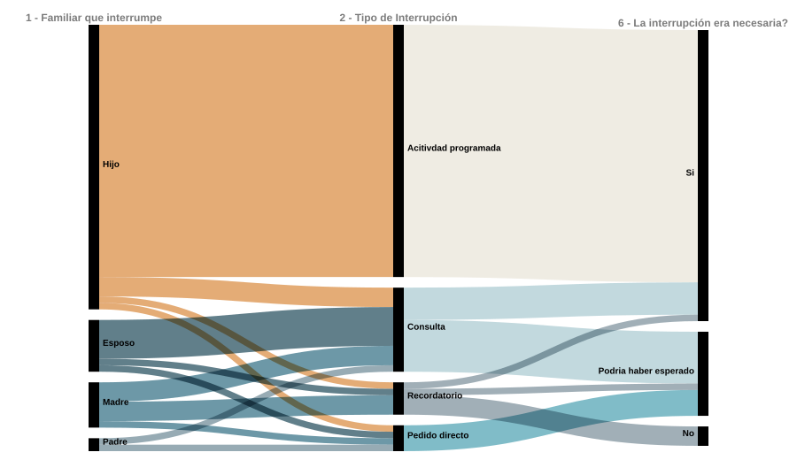

La Logística Invisible: El Costo de la Interrupción
Auditoría temporal sobre la fragmentación de la jornada laboral en profesionales independientes.
¿De quién provienen las interrupciones y qué tipo de demanda generan sobre mi jornada laboral?
Diagrama de flujo aluvial que vincula el miembro del hogar, el requerimiento y su nivel de postergabilidad.

¿En qué momentos críticos de la jornada se fragmenta mi tiempo de trabajo?
Matriz horaria de calor por día hábil.
¿Cómo evoluciona el costo temporal de las interrupciones entre marzo y noviembre?
Área apilada: horas productivas perdidas vs. horas recuperadas durante la noche.
¿Cuál es el balance anual entre la demanda operativa familiar y el costo en horas de descanso?
Panel de correlación y KPI consolidado de impacto anual.